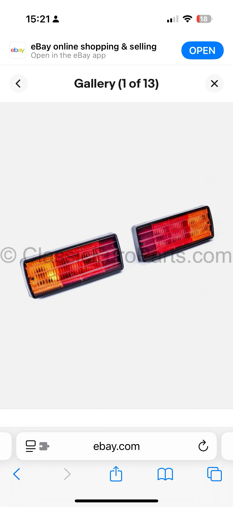

Page 2: Rear lighting and rear SAM
Your report shows right-rear lamp faults and rear SAM undervoltage. Get the rear lighting back to a known-good incandescent baseline before chasing module faults.

Bulbs to use for diagnostic reset
Brake / tail bulb
P21/5W (often cross-referenced as 1157)
Use in the brake / tail position.
Turn signal bulb
P21W (often cross-referenced as 1156)
Use in the amber turn-signal position.
Fog / reverse bulb
P21W (often cross-referenced as 1156)
Use in the third bulb position on each side.
Step-by-step
- Temporarily remove any rear LED bulbs and reinstall incandescent bulbs in all affected rear positions.
- Inspect bulb holders for heat damage, loose contacts, and corrosion.
- Inspect the tail-light harness connectors and nearby rear ground points.
- Clear rear SAM codes.
- Rescan and note which lamp codes come back immediately.